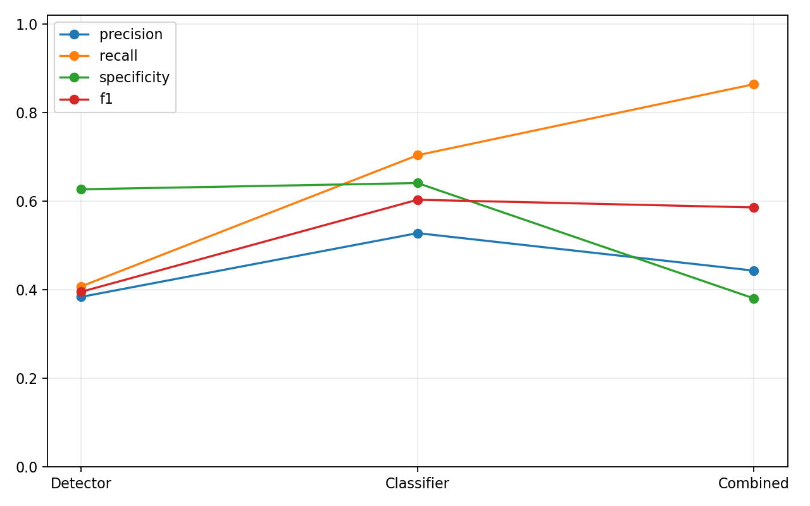

Image-level classifier trained from detection labels, then combined with the detector by OR logic.
Classifier weights: runs/classification/brain_tumor_cls_nano/weights/best.pt
Detector weights: runs/detect/train/weights/best.pt
Dataset counts: train positive=459, train negative=434, val positive=81, val negative=142

| Strategy | Cls threshold | Det threshold | Precision | Recall | Specificity | F1 | TP | FP | TN | FN |
|---|---|---|---|---|---|---|---|---|---|---|
| detector_only | 0.25 | 0.384 | 0.407 | 0.627 | 0.395 | 33 | 53 | 89 | 48 | |
| classifier_only | 0.05 | 0.388 | 0.988 | 0.113 | 0.557 | 80 | 126 | 16 | 1 | |
| classifier_or_detector | 0.05 | 0.25 | 0.372 | 1.000 | 0.035 | 0.542 | 81 | 137 | 5 | 0 |
| classifier_only | 0.1 | 0.410 | 0.951 | 0.218 | 0.572 | 77 | 111 | 31 | 4 | |
| classifier_or_detector | 0.1 | 0.25 | 0.386 | 0.988 | 0.106 | 0.556 | 80 | 127 | 15 | 1 |
| classifier_only | 0.2 | 0.454 | 0.852 | 0.415 | 0.592 | 69 | 83 | 59 | 12 | |
| classifier_or_detector | 0.2 | 0.25 | 0.412 | 0.926 | 0.246 | 0.570 | 75 | 107 | 35 | 6 |
| classifier_only | 0.3 | 0.528 | 0.704 | 0.641 | 0.603 | 57 | 51 | 91 | 24 | |
| classifier_or_detector | 0.3 | 0.25 | 0.443 | 0.864 | 0.380 | 0.586 | 70 | 88 | 54 | 11 |
| classifier_only | 0.4 | 0.580 | 0.580 | 0.761 | 0.580 | 47 | 34 | 108 | 34 | |
| classifier_or_detector | 0.4 | 0.25 | 0.448 | 0.802 | 0.437 | 0.575 | 65 | 80 | 62 | 16 |
| classifier_only | 0.5 | 0.621 | 0.444 | 0.845 | 0.518 | 36 | 22 | 120 | 45 | |
| classifier_or_detector | 0.5 | 0.25 | 0.462 | 0.741 | 0.507 | 0.569 | 60 | 70 | 72 | 21 |
| classifier_only | 0.6 | 0.697 | 0.284 | 0.930 | 0.404 | 23 | 10 | 132 | 58 | |
| classifier_or_detector | 0.6 | 0.25 | 0.455 | 0.630 | 0.570 | 0.528 | 51 | 61 | 81 | 30 |
| classifier_only | 0.7 | 0.545 | 0.074 | 0.965 | 0.130 | 6 | 5 | 137 | 75 | |
| classifier_or_detector | 0.7 | 0.25 | 0.402 | 0.481 | 0.592 | 0.438 | 39 | 58 | 84 | 42 |
| classifier_only | 0.8 | 0.571 | 0.049 | 0.979 | 0.091 | 4 | 3 | 139 | 77 | |
| classifier_or_detector | 0.8 | 0.25 | 0.398 | 0.457 | 0.606 | 0.425 | 37 | 56 | 86 | 44 |
| classifier_only | 0.9 | 1.000 | 0.025 | 1.000 | 0.048 | 2 | 0 | 142 | 79 | |
| classifier_or_detector | 0.9 | 0.25 | 0.398 | 0.432 | 0.627 | 0.414 | 35 | 53 | 89 | 46 |